VIE Existing layout preserved · 22 → 23 nodes
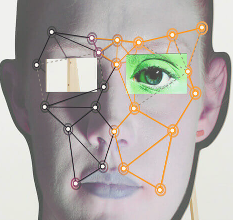
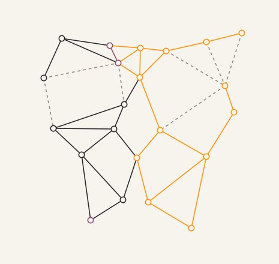
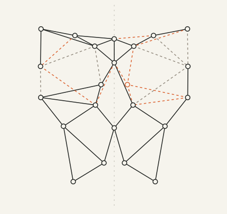
Research notebook / 01
Three node layouts after Tony Oursler, flattened and reworked into bilateral symmetry. The existing collage stays intact.
Observed → isolated → symmetrical
Manual traces from photographs, with approximate coordinates. Grey dashed lines mark uncertain connections; orange marks additions for symmetry. Flattening removes the photograph—it does not recover a front-facing 3D scan.



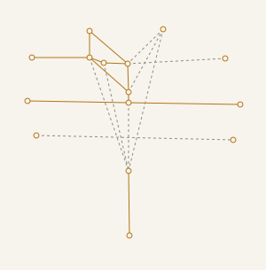
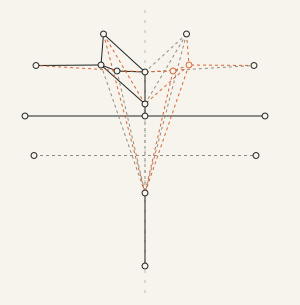
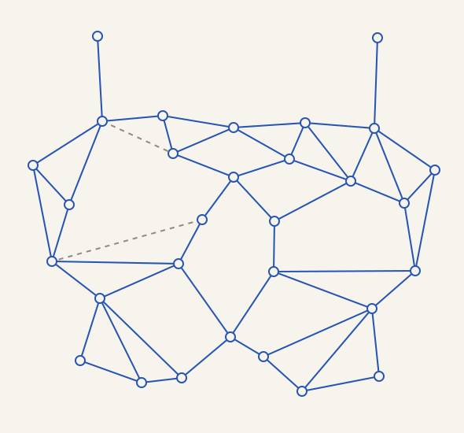
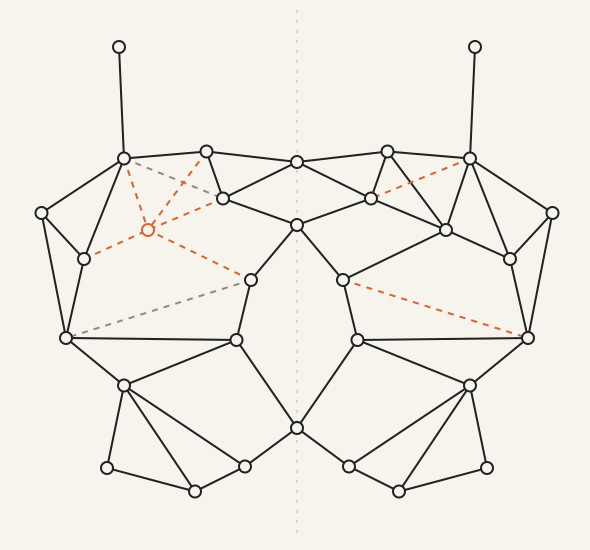
Choose a vertical axis and corresponding left/right nodes. Average each pair’s height and distance from the axis, then place them at equal distances on opposite sides. Align central nodes with the axis. Mirror unpaired points and missing connections. Pairing is a design decision; it does not establish anatomical equivalence.
The preserved VIE file contains the exact existing 22 nodes and 39 edges. Its earlier reconstruction includes inferred hidden lines. New traces record visible markers and flag uncertain lines; they do not claim to recover every obscured marker.
“Red portrait” and “Blue mask” are descriptive study labels, not verified artwork titles. The blue mask belongs to the parallel panel series in the same 2015 exhibition.
Reference artworks © Tony Oursler. Photographs: artist’s exhibition archive and Lisson Gallery / VIE. Traces and symmetrical derivatives are made for this course study; no AI-generated images are used on this study page.
A plan for movable facial fragments
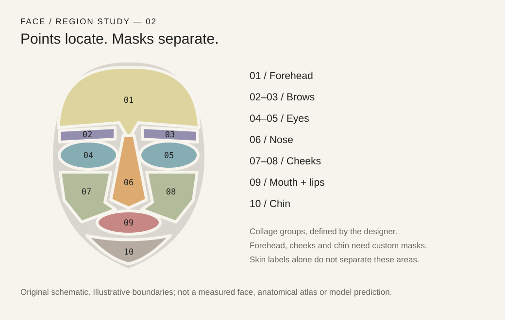
For this collage, a small node network can control a larger image fragment. Dragging an eye moves its attached nodes; the connections stretch. A landmark locates a feature, while a mask defines which pixels belong to it.
Download region diagram · SVGFrom five anchors to a dense surface
These are different ways to locate, align or partition a face. Identity verification adds a separate step: comparing face embeddings. Each drawing distinguishes source data from illustrative geometry.
Download all six drawings · SVGSources and drawing methods
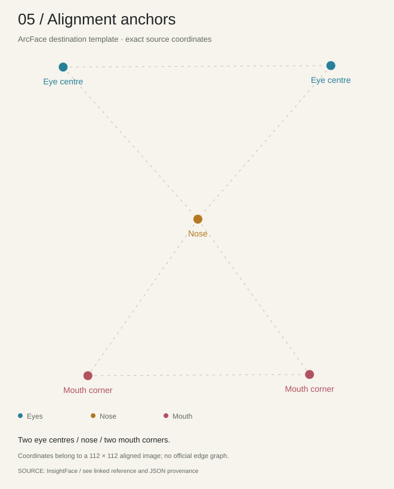
Exact ArcFace destination coordinates for eye centres, nose and mouth corners. Dashed guides illustrate their spatial relationship; the template has no official edge graph.
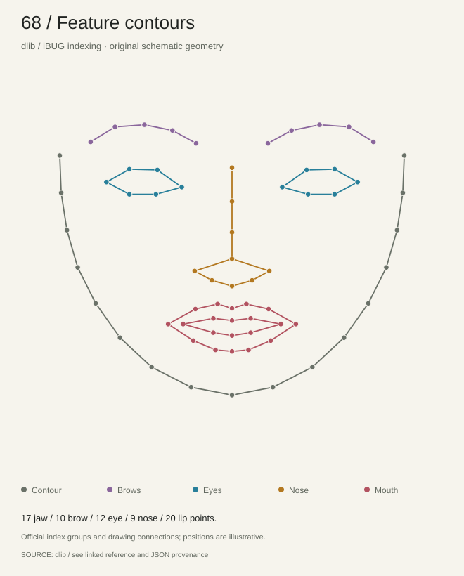
An original face schematic with dlib’s standard zero-based indices and drawing connections. Colors separate the jaw, brows, eyes, nose and lips.
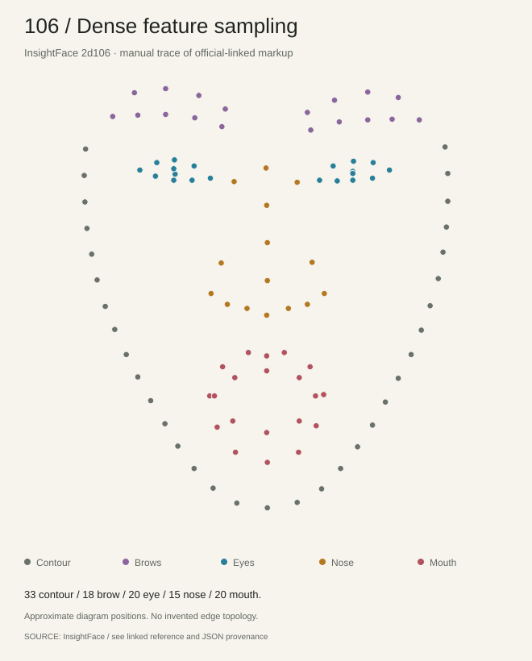
Manually redrawn from the point markup linked by InsightFace. The coordinates are approximate. This point cloud preserves the feature groups without inventing a connected mesh.
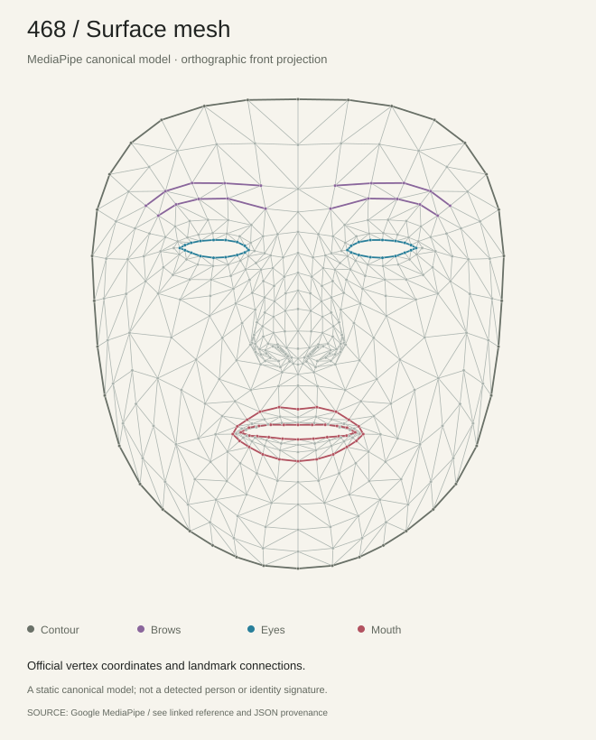
A front projection of Google’s canonical 3D face, with official triangulation and highlighted feature connections. The JSON retains the original depth coordinates.
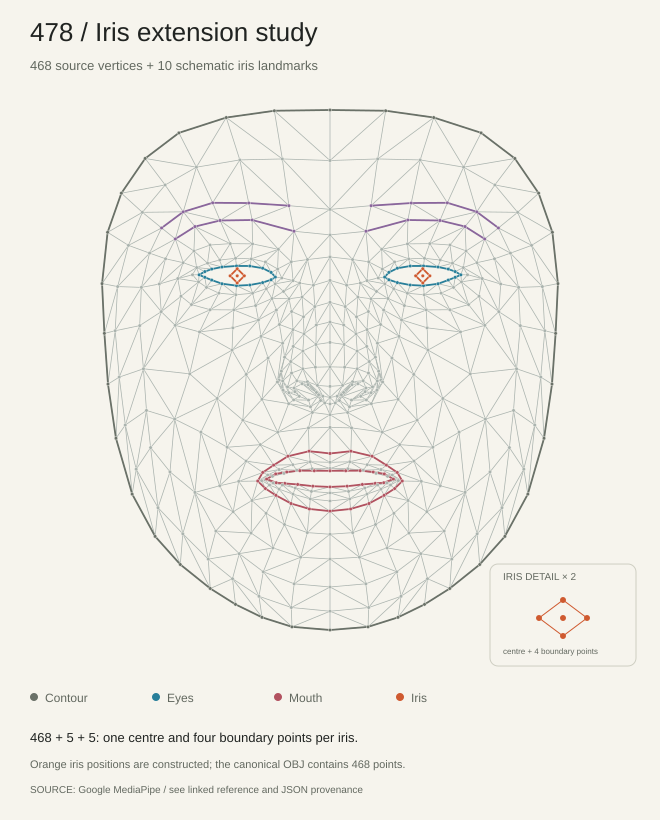
The 468-point base plus ten illustrated iris points. The orange points show the 478-point structure; their positions are schematic because the canonical model only contains 468 vertices.
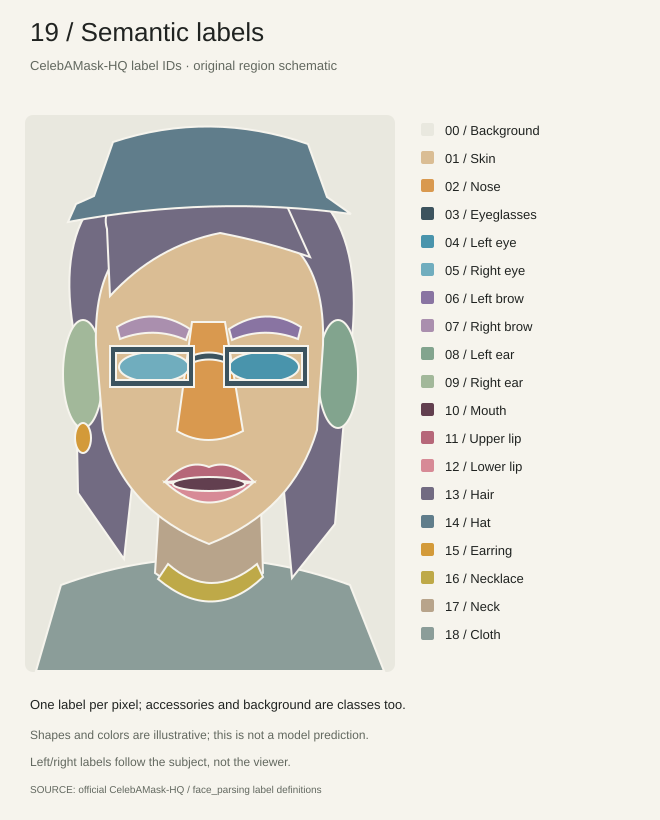
An original label-map schematic using CelebAMask-HQ’s official class IDs. Areas represent pixel categories, including background and accessories; this is not a landmark graph or a model prediction.
Three different jobs—not one system
Locate / points
Estimates 478 3D landmarks. Defined connection groups include eyes, brows, lips, irises and the face oval. Suitable for browser-based tracking; it does not identify a person.
Locate / sparse points
A smaller outline for the jaw, brows, nose, eyes and lips. Useful for understanding feature groups. It has no dedicated forehead or hair region.
Separate / pixel masks
A 19-class annotation scheme including background, skin, eyes, brows, nose, mouth, separate lips, ears and hair. A model trained for this scheme can produce cutout masks. It does not split skin into forehead, cheeks and chin.
Recognize / identity
A recognition pipeline detects and aligns a face, then compares numerical identity representations. Alignment points help normalize the image; they are not a complete set of cutout regions.
| Region | Indices | Count |
|---|---|---|
| Jaw outline | 0–16 | 17 |
| Two brows | 17–21 / 22–26 | 5 + 5 |
| Nose bridge / base | 27–30 / 31–35 | 4 + 5 |
| Two eyes | 36–41 / 42–47 | 6 + 6 |
| Outer / inner lip | 48–59 / 60–67 | 12 + 8 |
For this project: use a small, editable node graph now. Add MediaPipe if the face should move with a camera; use parsing masks if the fragments need accurate image boundaries. Identity recognition is a separate feature.
{kind=link}
{kind=link}
{kind=link}
{kind=link}
{kind=link}
{kind=link}
{kind=link}
{kind=link}
{kind=link}
{kind=link}
{kind=link}
{kind=link}
{kind=link}
{kind=link}
{kind=link}